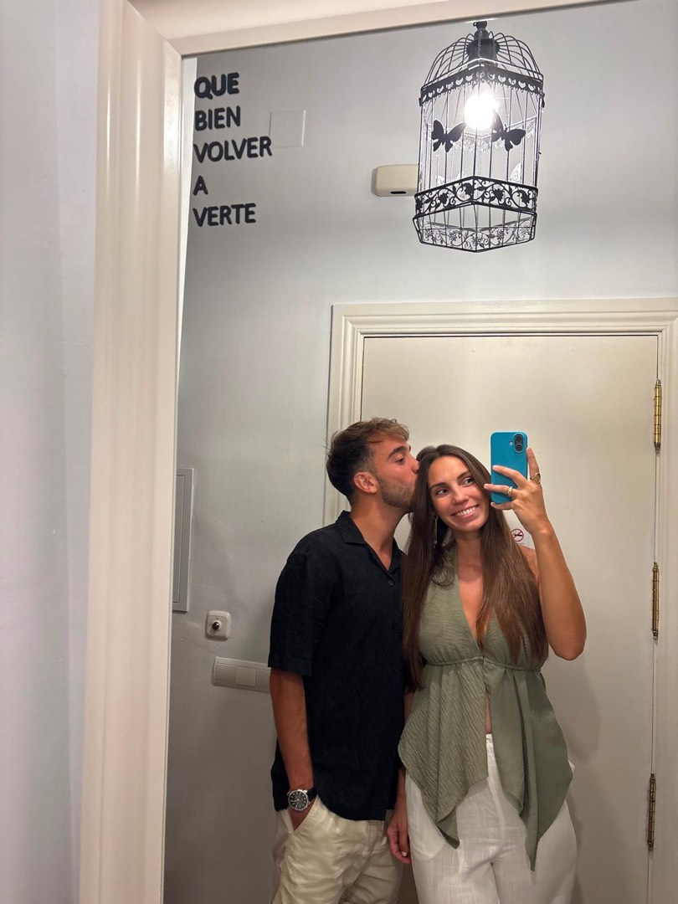
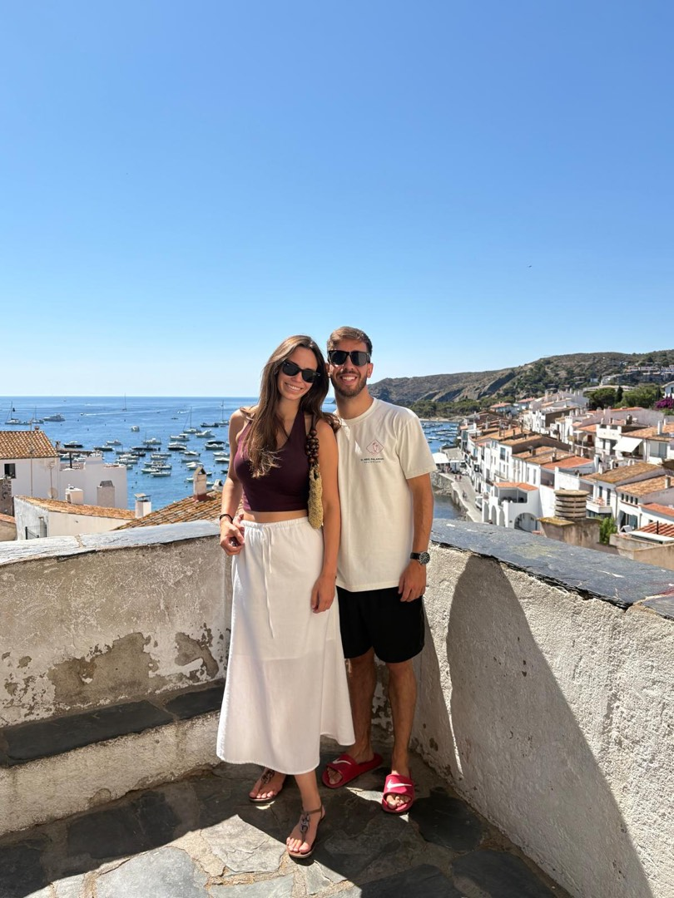
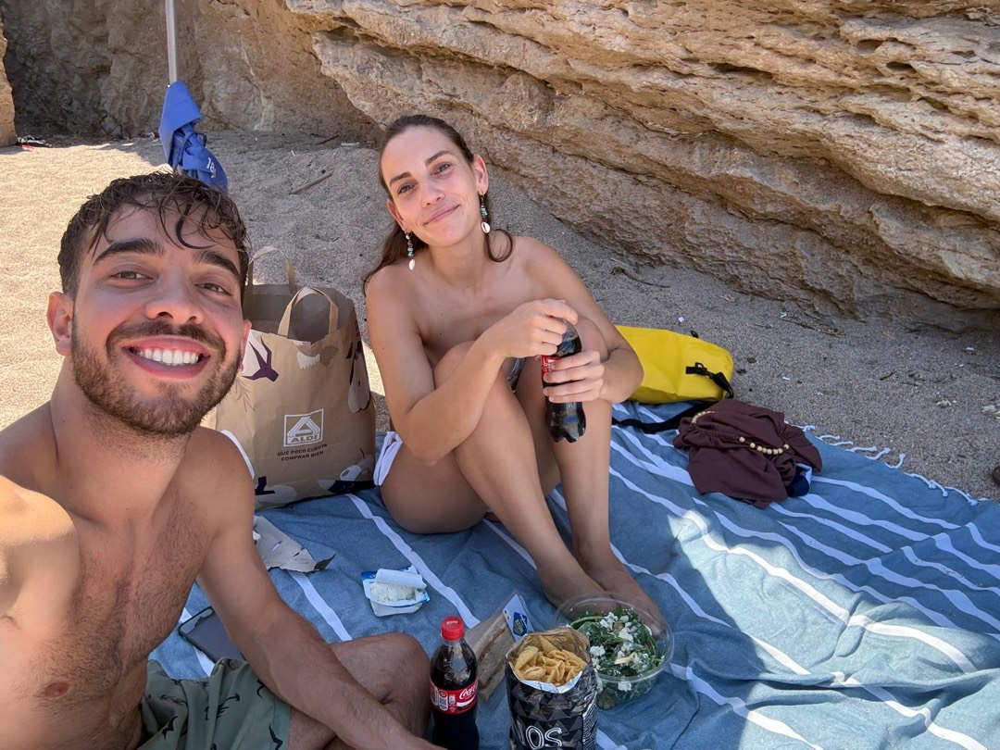
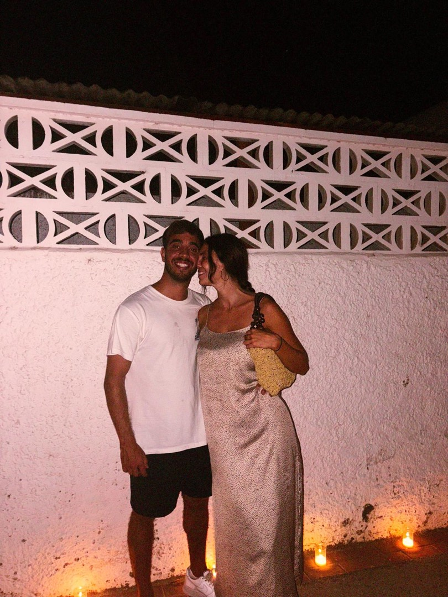
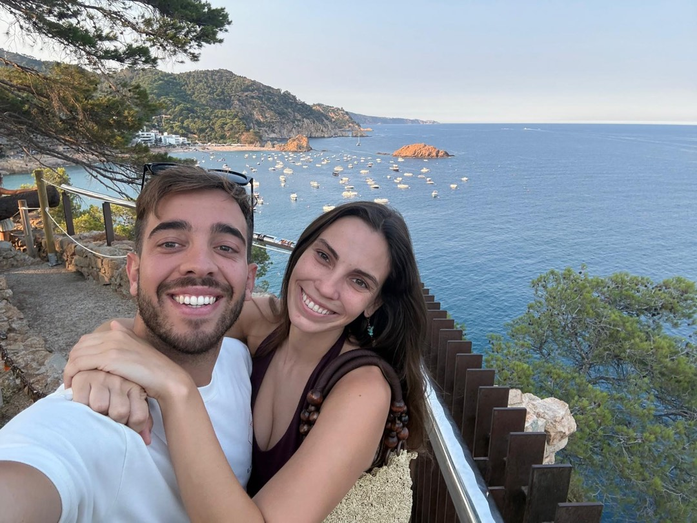
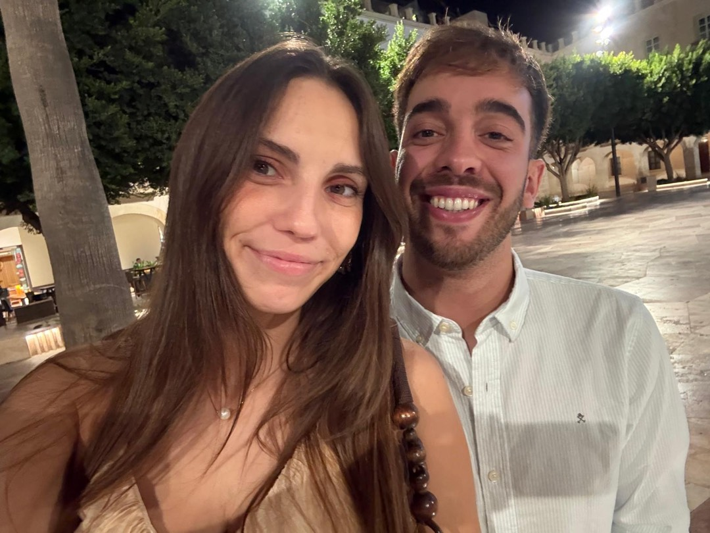
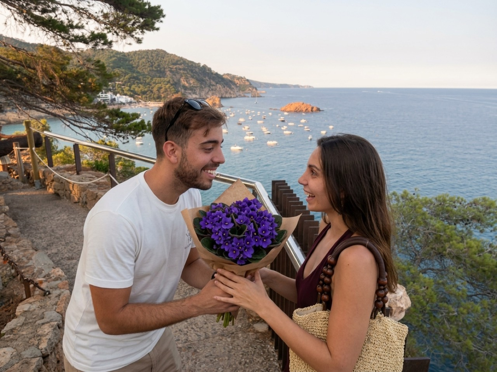

Victoria... ¿Creías que me había olvidado?
No me he olvidado.
Hay cosas que preferiría entregarte en persona.
Pero esta vez no ha podido ser.
Así que he buscado otra manera.
Mira todo lo que hemos ido guardando.






Y esto no ha hecho más que empezar.
Y a todos estos recuerdos...
hay uno nuevo que quiero añadir.
toca la luz